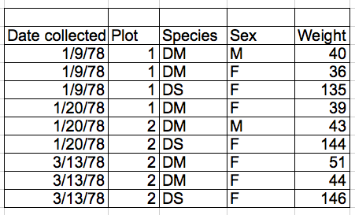

Data Organization in Spreadsheets
Formatting data tables in Spreadsheets
Overview
Teaching: 15 min
Exercises: 0 minQuestions
How to format data in spreadsheets for effective data use
Objectives
Describe best practices for data entry and formatting in spreadsheets.
Apply best practices to arrange variables and observations in a spreadsheet.
Authors: Christie Bahlai, Aleksandra Pawlik
Contributors: Jennifer Bryan, Alexander Duryee, Jeffrey Hollister, Daisie Huang, Owen Jones,
Ben Marwick and Sebastian Kupny.
The most common mistake made is treating treating spreadsheet programs like lab notebooks, that is, relying on context, notes in the margin, spatial layout of data and fields to convey information. As humans, we can (usually) interpret these things, but computers are dumb, and unless we explain to the computer what every single thing means (and that can be hard!), it will not be able to see how our data fit together.
Using the power of computers, we can manage and analyze data in much more effective and faster ways, but to use that power, we have to set up our data for the computer to be able to understand it (and computers are very literal).
This is why it’s extremely important to set up well-formatted tables from the outset - before you even start entering data from your very first preliminary experiment. Data organization is the foundation of your research project. It can make it easier or harder to work with your data throughout your analysis, so it’s worth thinking about when you’re doing your data entry or setting up your experiment. You can set things up a different ways in spreadsheets, but some of these choices can limit your ability to work with the data in other programs or have the you-of-6-months-from-now or your collaborator work with the data.
Note: the best layouts/formats (as well as software and interfaces) for data entry and data analysis might be different. It is important to take this into account, and ideally automate the conversion from one to another.
Keeping track of your analyses
When you’re working with spreadsheets, during data clean up or analyses, it’s very easy to end up with a spreadsheet that looks very different from the one you started with. In order to be able to reproduce your analyses or figure out what you did when Reviewer #3 asks for a different analysis, you must
- create a new file or tab with your cleaned or analyzed data. Do not modify that original dataset, or you will never know where you started!
- keep track of the steps you took in your clean up or analysis. You should track these steps as you would any step in an experiment. You can do this in another text file, or a good option is to create a new tab in your spreadsheet with your notes. This way the notes and data stay together.
This might be an example of a spreadsheet setup:

Put these principles in to practice today during your Exercises.
Structuring data in spreadsheets
The cardinal rules of using spreadsheet programs for data:
- Put all your variables in columns - the thing you’re measuring, like ‘weight’ or ‘temperature’.
- Put each observation in its own row.
- Don’t combine multiple pieces of information in one cell. Sometimes it just seems like one thing, but think if that’s the only way you’ll want to be able to use or sort that data.
- Leave the raw data raw - don’t mess with it!
- Export the cleaned data to a text based format like CSV (comma-separated values) format. This ensures that anyone can use the data, and is required by most data repositories.
For instance, we have data from a survey of small mammals in a desert ecosystem. Different people have gone to the field and entered data in to a spreadsheet. They keep track of things like species, plot, weight, sex and date collected.
If they were to keep track of the data like this:

the problem is that species and sex are in the same field. So, if they wanted to look at all of one species or look at different weight distributions by sex, it would be hard to do this using this data setup. If instead we put sex and species in different columns, you can see that it would be much easier.
Columns for variables and rows for observations
The rule of thumb, when setting up a datasheet, is columns = variables, rows = observations, cells = data (values).
So, instead we should have:

Exercise
We’re going to take a messy version of the survey data and clean it up.
- Download the data by clicking here to get it from FigShare.
- Open up the data in a spreadsheet program
- You can see that there are two tabs. Two field assistants conducted the surveys, one in 2013 and one in 2014, and they both kept track of the data in their own way. Now you’re the person in charge of this project and you want to be able to start analyzing the data.
- With the person next to you, work on the messy data so that a computer will be able to understand it. Clean up the 2013 and 2014 tabs, and put them all together in one spreadsheet.
Important Do not forget our first piece of advice, the create a new file (or tab) for the cleaned data, never modify your original (raw) data.
After you go through this exercise, we’ll discuss as a group what you think was wrong with this data and how you fixed it.
An excellent reference, in particular with regard to R scripting is
Hadley Wickham, Tidy Data, Vol. 59, Issue 10, Sep 2014, Journal of Statistical Software. http://www.jstatsoft.org/v59/i10.
Key Points
Never modify your raw data. Always make a copy before making any changes.
Keep track of all of the steps you take to clean your data.
Organize your data according to tidy data principles.